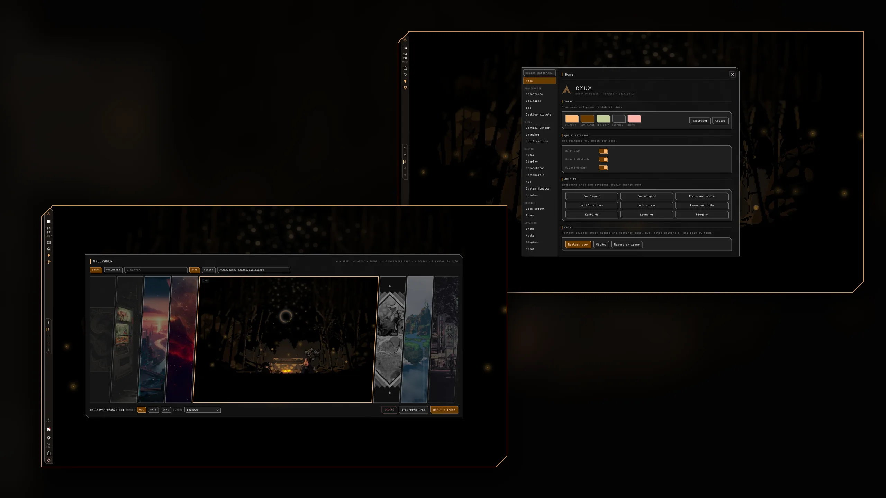

Quickshell · Hyprland · 0ver v0.1.0
crux
Sharp by design.
A desktop shell for Hyprland where every corner is cut at 45°. Bar, Control Center, launcher, notifications, lock screen and wallpaper theming, written in QML and configured from one settings panel.
yay -S crux-shell-git
crux · theme
Applied Wallpaper
Bar
Any edge, any monitor. 37 widgets.
- Per-monitor edgeTop on one screen, left on the other. Docked strip or floating outlined pill.
- Drag to reorderLong-press a widget and move it, including between sections.
- Joined drawersClick a widget and its drawer opens fused to the bar's outline. On a floating bar it unfolds straight out of the widget.
- BackdropA wallpaper strip behind the bar hides windows a scrolling layout parks off-screen, fading toward the work area.
- The widgetsWorkspaces, clock, media, tray, audio, network, Bluetooth, battery, system stats, updates and the rest.
Desktop
One shell. No extra daemons.
- Control CenterQuick toggles, audio sliders, weather, system gauges, and capture, record and color-pick actions.
- LauncherFuzzy search, a run-command prefix and an inline calculator. Enter copies the result.
- NotificationsHistory, do-not-disturb, a volume OSD and a session menu.
- Lock and idleLock screen, polkit agent and idle handling (screen off, lock, suspend), all built in.
- ExtrasNight light, clipboard history and Philips Hue control.
- Settings panelA home page with your theme and shortcuts, 20 tabs in five sections, and a search box.

Theming
Pick a wallpaper. Everything follows.
crux runs matugen on your wallpaper and pushes the palette into Hyprland, kitty, GTK, Qt, yazi, btop, starship, Neovim, cava and Discord. Or skip the wallpaper and use a preset. These are the ones that ship with crux. Pick one and this page recolors the way your desktop would.

Install
Arch and Hyprland. Lua config required.
$ yay -S crux-shell-git
$ qs -c crux$ git clone https://github.com/teezlabs/crux-shell ~/.config/quickshell/crux
$ qs -c cruxStart with Hyprland · hyprland.lua
hl.on("hyprland.start", function()
hl.exec_cmd("qs -c crux")
end)crux dispatches in Lua syntax, so a classic hyprland.conf can't switch workspaces from the bar.
Bind anything · qs ipc
qs ipc -c crux call launcher toggle
qs ipc -c crux call controlCenter toggle
qs ipc -c crux call wallpaperBrowser toggle
qs ipc -c crux call lockscreen lock
qs ipc -c crux call darkMode toggleOpens on the focused monitor. qs ipc -c crux show lists every target.
Needs
hyprland quickshell matugen brightnessctl wlsunset cliphist wl-clipboard playerctl networkmanager bluez python git
Nice to have
lm_sensors wf-recorder hyprpicker imagemagick